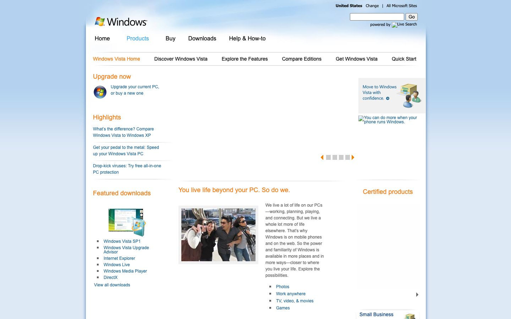

References / Website / 87
Windows Vista website, 2008
Microsoft’s Windows Vista product site as archived in July 2008.
- Source
- microsoft.com/windows/windows-vista (archived copy)
- Creator
- Microsoft
- Made
- 2008 (capture date)
- Style
- Frutiger Aero (agent-proposed, not yet reviewed by a person)
- Moods
- Clean, corporate, airy
- Evidence
- Captured from the Internet Archive with
tools/capture.mjs(headless Chrome, 1440 × 900) on 25 September 2026 and inspected. The archived page may lack some images or scripts that the live page had. - Reviewed
- Rights
- Third-party work, stored with credit for commentary. License: unverified. Rights policy
Observed
- A pale blue gradient fills the top of the page behind the Windows flag logo.
- Navigation and headings use orange and blue text on white.
- Small product illustrations show glossy boxes and a PC with blue highlights.
- Content sits in narrow columns of small type.
Why it belongs
A useful contrast with the Vista interface record: the style was strongest in the software, and the marketing web of 2008 carried only its colors and small glossy pictures.
Measured
Machine-extracted by tools/extract-traits.js on . Full measurement.
- Type families
- Segoe UI (93%), Tahoma (7%)
- Type scale ratio
- 1.14
- Median radius
- 0 px
- Mean chroma
- 0.18
- Palette
- #646464 31%
- #888888 25%
- #196297 24%
- #000000 12%
- #f58220 6%
- #4eb0e9 2%
- #063b83 1%

